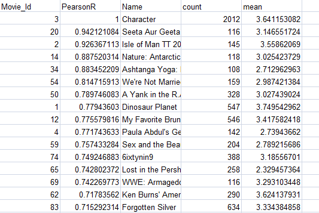
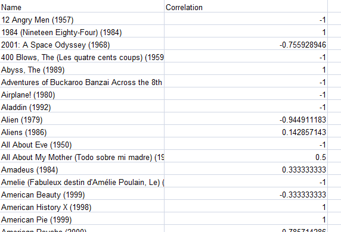
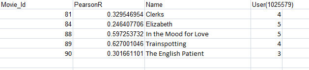

<!--navigation bar-->
<mat-toolbar color="primary">
  <mat-toolbar-row>
      <mat-icon>description</mat-icon>
      <button routerLink="/dataset" class="nav" style="margin-right:20px" mat-flat-button color="primary">Dataset</button>
      <mat-icon>create</mat-icon>
      <button routerLink="/working" class="nav" style="margin-right:20px" mat-flat-button color="primary">Outputs</button>
      <mat-icon>poll</mat-icon>
      <button routerLink="/result" class="nav" mat-flat-button color="primary">Analysis</button>
      </mat-toolbar-row>
      </mat-toolbar>
    
    
               
        
        <mat-grid-list cols="2"  rowHeight="1000px">
            <mat-grid-tile class="left" rowHeight="100px">
             <h1 style="position:absolute;top:10px;left:230px;color:white">Pearson Calculation</h1>
             <h2 style="position:absolute;top:40px;left:50px;color:white">For Netflix:</h2>
             <mat-card style="position:absolute;left:50px;top:90px"></mat-card><br>
             <h2 style="position:absolute;top:470px;left:50px;color:white">For MovieLens:</h2>    
               <mat-card style="position:absolute;top:530px;"></mat-card>    
            </mat-grid-tile>


            <mat-grid-tile class="right">
                <h1 style="position:absolute;top:20px;color:white">Combining Pearson Values for given Movies</h1>
          <mat-card style="position:absolute;top:200px;"></mat-card>
                   
            </mat-grid-tile>
            </mat-grid-list>